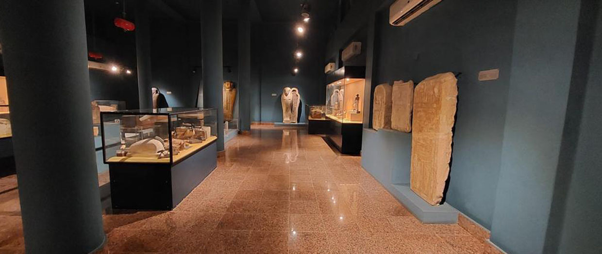
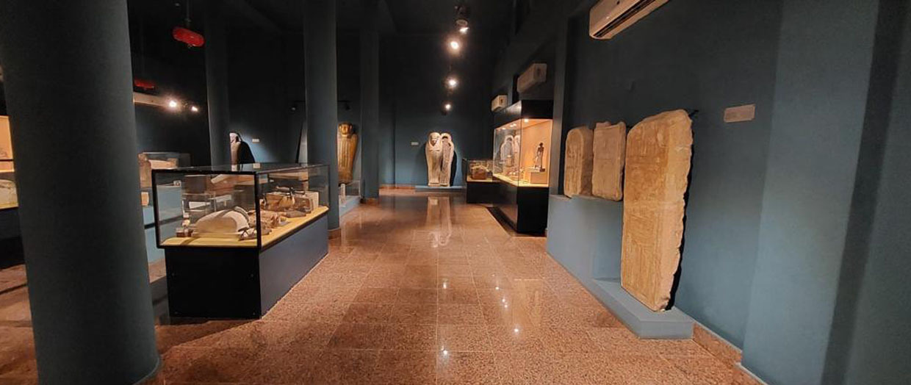
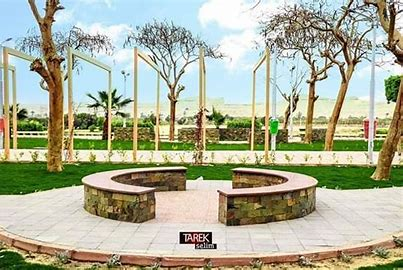
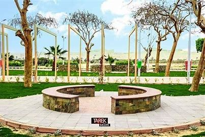

جامعة المنيا: صرح العلم الشامخ
تعد جامعة المنيا واحدة من أعرق الجامعات المصرية، استقلت عن جامعة أسيوط في عام 1976. تقع الجامعة في مدينة المنيا وتتميز بحرمها الجامعي المنسق الذي يجمع بين التطور المعماري والمساحات الخضراء، وتعتبر المحرك الرئيسي للتنمية والثقافة في إقليم شمال الصعيد.
كليات الجامعة وتخصصاتها الفريدة
تضم الجامعة مجموعة متنوعة من الكليات تشمل:
- القطاع الطبي: كليات الطب، طب الأسنان، الصيدلة، والتمريض.
- القطاع الهندسي والتكنولوجي: كليات الهندسة، الحاسبات والمعلومات، والعلوم.
- القطاع الإنساني والتربوي: كليات دار العلوم، التربية، الآداب، الحقوق، والألسن.
- القطاع الفني والرياضي: كلية الفنون الجميلة (الأعرق في الصعيد)، كلية التربية الفنية، وكلية التربية الرياضية.
- القطاع الزراعي: كلية الزراعة التي تمتلك مساحات تعليمية وتجارب زراعية رائدة.
المراكز البحثية والابتكار
تضم الجامعة مراكز نوعية مثل مركز التكنولوجيا الحيوية، مركز الابتكار وريادة الأعمال، ومركز ضمان الجودة، بالإضافة إلى امتلاكها مطبعة جامعية ضخمة ووحدات إنتاجية تدعم موارد الجامعة وتدرب الطلاب.
رموز ومشاهير المنيا
د. طه حسين
وُلد فى 15 نوفمبر 1889م فى عزبة الكيلو إحدى القرى التابعة لمركز مغاغة، وفى سن الثالثة أصيب بالعمى نتيجة تلقيه علاجاً خاطئاً، وهو أحد أشهر الكُتاب والمُفكرين المصريين فى القرن العشرين، لُقب بـ«عميد الأدب العربى».
علاء ولى الدين
ولد فى 28 سبتمبر 1963 فى مركز بنى مزار، وتخرج فى مدرسة مصر الجديدة الثانوية العسكرية، وبرز فى البداية من خلال عدة أدوار ثانوية فى أفلام عادل إمام، ثم انطلق بعد ذلك وقام ببطولة عدة أفلام، كما ساهم فى ظهور العديد من النجوم.
عمار الشريعي
وُلد فى 16 أبريل 1948م، موسيقار ومؤلف وناقد موسيقى شهير، له العديد من البصمات فى الموسيقى الآلية والغنائية المصرية، إلى جانب الموسيقى التصويرية لمختلف المسلسلات والأفلام، وأصبح أحد عمالقة المؤلفين الموسيقيين.
معرض الصور الثقافي
 

 

المنارات الثقافية بالمنيا
قصر ثقافة المنيا
يعتبر قصر ثقافة المنيا "بيت المبدعين" الأول في المحافظة، حيث يضم مسرحاً كبيراً مجهزاً بأحدث التقنيات لاستقبال العروض المسرحية وفرق الموسيقى العربية. كما يحتوي القصر على قاعات متخصصة للفنون التشكيلية وورش تعليم الخط العربي، ويحتضن "فرقة المنيا للفنون الشعبية" التي تنقل تراث المحافظة للعالم عبر مشاركاتها الدولية، مما يجعله مركزاً حيوياً لاكتشاف وصقل المواهب الشابة في مختلف المجالات الفنية.
مكتبة مصر العامة
بموقعها الفريد الذي يطل مباشرة على نهر النيل، تعد مكتبة مصر العامة بالمنيا صرحاً تنويرياً متكاملاً. لا تكتفي المكتبة بتقديم آلاف العناوين في مختلف العلوم، بل تعمل كـ مركز تدريبي وتكنولوجي يقدم دورات مكثفة في اللغات الأجنبية، الحاسب الآلي، وتنمية المهارات البشرية. كما تخصص المكتبة جناحاً كاملاً للأنشطة التفاعلية للأطفال، مما يساهم في بناء جيل مثقف ومواكب للتطور التكنولوجي.
نادي الأدب بالمنيا
نادي الأدب هو الركيزة الأساسية للحراك الفكري في المحافظة، حيث يجمع تحت لوائه كبار الأدباء والشعراء مع جيل الواعد من المبدعين. يعقد النادي ندوات أسبوعية ولقاءات فكرية مفتوحة لمناقشة الإصدارات الأدبية الحديثة، ويهدف النادي إلى الحفاظ على الريادة الأدبية للمنيا (موطن طه حسين) عبر توفير بيئة نقدية بناءة تساعد الشباب على تطوير أدواتهم الإبداعية في الشعر والقصة والرواية.
حراس التاريخ: متاحف المنيا
تفتخر المحافظة بوجود متاحف تجسد عظمة الحضارة المصرية عبر العصور:
متحف ملوي الإقليمي
متحف إقليمي هام في مدينة ملوي، يعرض قطعاً أثرية من العصور الفرعونية والقبطية والرومانية، ويعد شاهداً على التنوع الحضاري للمنطقة.
المتحف الآتوني (قيد الإنشاء)
مشروع قومي عملاق بتصميم هرمي، مخصص لفترة العمارنة والملك إخناتون، ويهدف ليكون مركزاً عالمياً لدراسة الحضارة الآتونية والمنطقة.
دليل التعليم بالمنيا
التعليم العام
- إجمالي المدارس: أكثر من 3,100 مدرسة.
- المراحل التعليمية: (ابتدائي - إعدادي - ثانوي - فني).
- المدارس التجريبية: انتشار واسع للمدارس الرسمية للغات.
التعليم الأزهري
- المعاهد: قطاع عريض من المعاهد الأزهرية بكل المراكز.
- جامعة الأزهر: تضم المنيا كليات تابعة لفرع جامعة الأزهر بصعيد مصر.
إحصائيات ثقافية
- بيوت الثقافة: 9 بيوت ثقافة موزعة على مراكز المحافظة.
- المكتبات العامة: 25 مكتبة فرعية تخدم القرى والمراكز.
- معدل القراءة: المنيا من أعلى محافظات الصعيد في الأنشطة الثقافية.
جامعة المنيا هي أول جامعة مصرية تحصل كلياتها على مراكز متقدمة في الجودة والاعتماد بالصعيد.